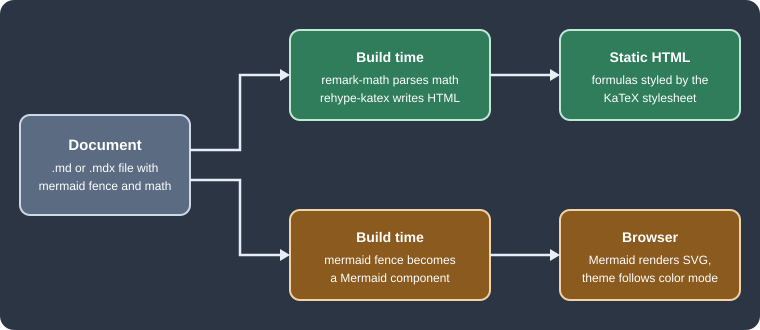

Diagrams and Math
|
This content was generated with the assistance of AI and should be verified against the official documentation before being relied on in production. |
This page was written against Docusaurus 3.10.2 and checked on 2026-10-26. Docusaurus has no built-in diagrams or math,
but both are one theme or two plugins away. Diagrams come from Mermaid, written as a fenced code block and drawn in the
browser by @docusaurus/theme-mermaid. Math comes from KaTeX, written with dollar signs and converted to HTML while the
site is built by remark-math and rehype-katex. The examples use the Pocket Units documentation site, a tiny
units-conversion library written in Python and C#, in a scratch site generated by create-docusaurus@3.10.2 (classic
preset, TypeScript, React 19). The site was built and served, and the pages were opened in a browser to see the result.
Two different rendering paths
The two features look alike in a document but run in different places. This matters for performance, for search engines and for what happens when the source is wrong.

Figure: math is turned into static HTML during the build, so a reader needs no JavaScript to see a formula. A Mermaid block is only compiled into a component during the build. The diagram itself is drawn in the browser, when the page is displayed, and is drawn again when the reader switches between light and dark mode.
Mermaid diagrams
Installation and configuration
Two things are needed, and forgetting either one gives no diagram: the theme must be listed in themes, and the
Markdown compiler must be told to recognise the mermaid language with markdown.mermaid. The theme package has the
same version as the other Docusaurus packages.
npm i -E @docusaurus/theme-mermaid@3.10.2Source: Docusaurus docs: Diagrams
The installed theme pulled Mermaid 11.17.2 (the theme requires Mermaid 11.6.0 or later). The smallest working configuration is:
import type {Config} from '@docusaurus/types';
const config: Config = {
title: 'Pocket Units',
url: 'https://pocket-units.example.com',
baseUrl: '/',
markdown: {
mermaid: true,
},
themes: ['@docusaurus/theme-mermaid'],
presets: [['classic', {docs: {routeBasePath: '/'}}]],
};
export default config;Source: Docusaurus docs: Diagrams
With this in place, a fenced block whose language is mermaid becomes a diagram, in .md and .mdx files alike. The
following page is the Pocket Units conversion flow:
---
title: Pocket Units conversions
---
# Conversion flow
```mermaid
flowchart LR
A["convert(value, 'ft', 'm')"] --> B{"Units known?"}
B -- yes --> C["to base unit: value * factor_from"]
C --> D["from base unit: result / factor_to"]
B -- no --> E["raise UnknownUnitError"]
D --> F["return result"]
```Source: Docusaurus docs: Diagrams
The build succeeded and, in the browser, the block was replaced by an SVG inside an element with the class
docusaurus-mermaid-container. That class is stable and meant for custom CSS. Flowchart, class and sequence diagrams
from the same page rendered in the same way. Any Mermaid diagram type that the installed Mermaid version supports can be
used, so the page of the diagram type in the Mermaid documentation is the reference for its syntax.
A diagram can also be passed to the component directly, which is useful when the text is built from data. The component
is imported from @theme/Mermaid and receives the source in its value prop.
import Mermaid from '@theme/Mermaid';
<Mermaid value={`graph TD;
A[Metre] --> B[Kilometre];
`} />Source: Docusaurus docs: Diagrams
This component form was not executed here; only the fenced form was built.
Light and dark themes
Mermaid has its own themes, and the Docusaurus theme chooses one per colour mode. The defaults are default for the
light mode and dark for the dark mode. They are changed under themeConfig.mermaid.theme. Everything under
themeConfig.mermaid.options is handed to mermaid.initialize, so any Mermaid configuration key can be set there. The
theme config schema accepts only these two keys, theme (with light and dark) and options.
themeConfig: {
mermaid: {
theme: {light: 'neutral', dark: 'dark'},
options: {
maxTextSize: 50000,
fontFamily: 'Arial, Helvetica, sans-serif',
},
},
} satisfies Preset.ThemeConfig,Source: Docusaurus docs: Diagrams
The excerpt belongs inside the config object of the previous listing. When the reader toggled the colour mode in the
scratch site, the diagrams were rendered again with the other theme: the fill of a node changed from a light grey to a
dark grey, and nothing else on the page had to be touched. A diagram that sets its own colours with style or
classDef keeps them in both modes, so colours chosen for a light page can become unreadable on a dark one. Prefer the
Mermaid theme variables, or pick fills that have enough contrast on both backgrounds.
ELK layout
Mermaid lays out flowcharts with Dagre by default. ELK is an alternative engine that often produces tidier results for large graphs with many crossing edges. It is heavy (the scratch build contained about 1.4 MB of extra JavaScript chunks that mention ELK), so Docusaurus 3.9 made it an optional package. The theme detects the package when the site is built, and registers the layout in the browser if it is present. There is no Docusaurus option for it.
npm i -E @mermaid-js/layout-elk@0.1.9Source: Docusaurus docs: Diagrams
The version is not arbitrary: Docusaurus 3.10.2 declares the peer range ^0.1.9 for this package. The latest release on
npm at the time of writing is 1.0.1, and installing it next to the theme stops with an ERESOLVE error that names the
conflicting peer. Install the 0.1.x line.
Once the package is installed, each diagram chooses its engine in a front matter block at the top of the Mermaid text. Diagrams without it keep using Dagre.
```mermaid
---
config:
layout: elk
---
flowchart TD
A[Value] --> B[Base unit]
B --> C[Metre]
B --> D[Kilometre]
B --> E[Foot]
B --> F[Mile]
C --> G[Result]
D --> G
E --> G
F --> G
```Source: Docusaurus docs: Diagrams
The diagram rendered without errors with the package installed. The visual difference between the two engines for this small graph was not measured.
When the diagram does not render
-
The block is shown as plain code:
markdown.mermaidis missing or false, or the language tag is not exactlymermaid. This was the documented behaviour and was not reproduced here. -
The page shows a red box or an error message with the Mermaid parser output: the Mermaid text is invalid. The failure happens in the browser, so
docusaurus buildstill succeeds. With an unfinished flowchart (A -->followed by an unclosedB[) the build passed and the page showed a message starting withParse error on line 4, followed by the expected tokens, and a "Try again" button. -
docusaurus buildfails with a peer dependency error at install time: the ELK package is outside the^0.1.9range. -
A very large diagram may exceed Mermaid’s text size limit. The
maxTextSizeoption, set underoptions, raises it.
Because rendering happens in the browser, the build cannot validate diagrams. A page that is part of the Pocket Units site should be opened once after any change to its diagrams.
Math with KaTeX
Installation
Math needs two plugins and one stylesheet. The official page asks for remark-math major version 6 and rehype-katex
major version 7 for Docusaurus 3 (which uses MDX 3), and does not promise other versions work. The scratch site used the
newest releases of those lines.
npm i -E remark-math@6.0.0 rehype-katex@7.0.1Source: Docusaurus docs: Math Equations
The resolved KaTeX version was 0.16.47. remark-math teaches the Markdown parser the $ syntax. rehype-katex turns
the parsed formulas into HTML and MathML. Neither produces any styling.
Configuration
Both plugins are registered on the content plugin that renders the documents (and, if formulas are used there, on the
blog and pages plugins too, since each content plugin has its own remarkPlugins and rehypePlugins). The stylesheet
is added to the site’s stylesheets.
import remarkMath from 'remark-math';
import rehypeKatex from 'rehype-katex';
// inside the config object
stylesheets: [
{
href: 'https://cdn.jsdelivr.net/npm/katex@0.16.47/dist/katex.min.css',
type: 'text/css',
crossorigin: 'anonymous',
},
],
presets: [
[
'classic',
{
docs: {
sidebarPath: './sidebars.ts',
remarkPlugins: [remarkMath],
rehypePlugins: [rehypeKatex],
},
},
],
],Source: Docusaurus docs: Math Equations
The official page also adds an integrity hash to the stylesheet entry. It is omitted above because the hash depends on
the exact file and has to be taken from the official page or computed for the version in use. To avoid a third-party
CDN, copy katex.min.css and the fonts folder from a KaTeX release into static/ and point href at the local path;
the official page says the .woff2 files are enough. The generated HTML contains both a MathML copy and a visual copy of each formula, and
the stylesheet is what hides one of them and lays out the other, so it is required. The stylesheet in the scratch site
was loaded (it appeared in the page’s loaded style sheets) and formulas rendered correctly; a build without the
stylesheet was not tried.
ESM-only plugins and the config file
remark-math and rehype-katex are published only as ES modules. The docusaurus.config.ts generated by
create-docusaurus is compiled as ESM, so the import lines above just work. A CommonJS docusaurus.config.js cannot
do the same. With Node.js 24.21.0 a require('remark-math') was accepted, but it returns a module namespace object
instead of the plugin function, and the build failed with:
Error: Expected usable value but received an empty preset, which is probably a mistake: presets typically come with
`plugins` and sometimes with `settings`, but this has neitherOlder Node.js versions refuse to require an ES module at all. In a CommonJS config, export an async function and load
the plugins with a dynamic import(), which is what the official page shows:
module.exports = async function createConfigAsync() {
const remarkMath = (await import('remark-math')).default;
const rehypeKatex = (await import('rehype-katex')).default;
return {
title: 'Pocket Units',
url: 'https://pocket-units.example.com',
baseUrl: '/',
presets: [
[
'classic',
{
docs: {
routeBasePath: '/',
remarkPlugins: [remarkMath],
rehypePlugins: [rehypeKatex],
},
blog: false,
},
],
],
};
};Source: Docusaurus docs: Math Equations
This variant built successfully and rendered $a^2$ as a KaTeX element (the stylesheet was left out of this test).
Writing math
Inline math sits between single dollar signs. Display math goes in a fenced block with the language math, which the
official page prefers; a block between $$ lines also works but relies on a syntax extension that other Markdown tools
may not share.
A conversion from unit $a$ to unit $b$ multiplies by the ratio of the factors: $r = v \cdot \frac{f_a}{f_b}$.
For a mile to a kilometre, $f_a = 1609.344$ and $f_b = 1000$, so $1\,\text{mi} = 1.609344\,\text{km}$.
```math
r = v \cdot \frac{f_a}{f_b}
```
$$
\sum_{i=1}^{n} \frac{1}{2^i} = 1 - \frac{1}{2^n}
$$Source: Docusaurus docs: Math Equations
All four forms built. The page contained nine katex elements in the browser, and the inline, math fence and $$
forms each produced a formula. The ratio $f_a / f_b$ is the one used by the Pocket Units converter: a value is multiplied
by the factor of the source unit and divided by the factor of the target unit, both relative to the metre.
Pitfalls of math
-
Dollar signs in ordinary text start a formula. In the scratch site a sentence with two prices, written with a dollar sign before each amount, was rendered as a formula that swallowed the text between the two dollar signs, with the letters run together and the spaces lost. Escaping each dollar sign with a backslash (
\$5and\$3) printed them as plain text. This affects prices and any shell variable written outside a code span. -
A mistake in a formula does not fail the build.
rehype-katexrenders the error inline instead: an unbalanced formula (a\fracwith its second group left open) produced an element with the classkatex-error, red text, and a title attribute with the messageParseError: KaTeX parse error: Unexpected end of input in a macro argument, expected '}' at end of input. Search the built HTML forkatex-errorin CI to catch these. -
Formulas are not searchable text and the dollar signs remain in the page description metadata that Docusaurus derives from the first paragraph (the generated meta description contained the raw
$a^2$). Setdescriptionin the front matter for pages that begin with a formula. -
The Mermaid and math features are independent. Installing one does not enable the other.
-
Both features are described by the Docusaurus documentation as Markdown features, so they work in
.mdand.mdx. The scratch site used an.mdxfile; its.mdvariant (the CommonJS test above) also rendered math.
Pocket Units example in summary
The Pocket Units site needed these changes, all verified in the scratch site:
-
package.json:@docusaurus/theme-mermaid3.10.2,@mermaid-js/layout-elk0.1.9,remark-math6.0.0 andrehype-katex7.0.1. -
docusaurus.config.ts:markdown.mermaid: true,themes, thestylesheetsentry, the two plugins on the docs preset, andthemeConfig.mermaid. -
One page with four diagrams (a flowchart, a class diagram, a sequence diagram and an ELK flowchart) and the conversion formula.
For the other documentation tools in this section, the same two features are configured differently: see
Documentation tools for the comparison. Markdown features that share the fenced
block syntax, such as code block titles and tabs, are in
Markdown features, and the options of the markdown key are
in Configuration.